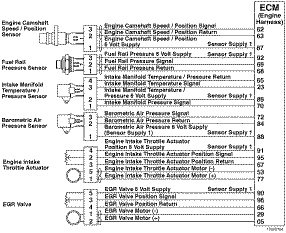
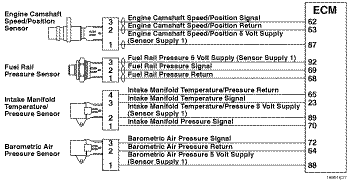
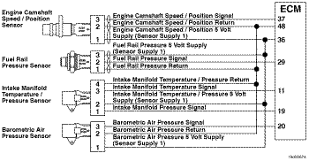
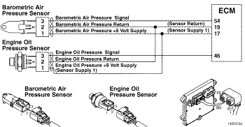
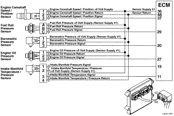

Código de Falha 352
|
| CÓDIGO | RAZÃO | EFEITO |
| Código de Falha: 352 PID: S212 SPN: 3509 FMI: 4/4 LÂMPADA: Âmbar SRT: |
Circuito de Alimentação No. 1 dos Sensores - Voltagem Abaixo da Normal ou com Voltagem Baixa. Detectada voltagem baixa no circuito de alimentação número 1 dos sensores. |
Despotenciamento do motor. |
|
 ISF2.8 CM2220 E - Circuito de Alimentação No. 1 dos Sensores
|
|
 ISF2.8 CM2220 AN/ISF3.8 CM2220 AN - Circuito de Alimentação No. 1 dos Sensores
|
|
 ISB4.5, ISB6.7, ISD4.5 e ISD6.7 CM2150 SN/ISL8.9 CM2150 SN - Circuito de Alimentação No. 1 dos Sensores
|
|
 ISM11 CM876 SN - Circuito de Alimentação No. 1 dos Sensores
|
|
 ISZ13 CM2150 - Circuito de Alimentação No. 1 dos Sensores
|
O circuito de alimentação número 1 de sensores do módulo eletrônico de controle (ECM) fornece uma alimentação de 5 volts a vários sensores do motor.
O circuito de alimentação número 1 dos sensores está localizado no conector do chicote do motor do ECM e fornece uma alimentação de 5 volts para vários sensores. A voltagem de alimentação é fixada no chicote do motor para cada sensor alimentado.
Este diagnóstico é executado continuamente quando a chave de ignição está na posição ON ou quando o motor está funcionando.
O ECM detecta que a voltagem do sinal de alimentação número 1 dos sensores é menor que 4,75 VCC durante mais de 1 segundo.
A voltagem baixa no fio de alimentação de +5 volts pode ser causada por um curto-circuito com o massa em um fio de alimentação, um curto-circuito entre um fio de alimentação e um fio de retorno, um sensor defeituoso, ou uma falha na fonte de alimentação do ECM.
Consulte o diagnóstico do Código de Falha 352.